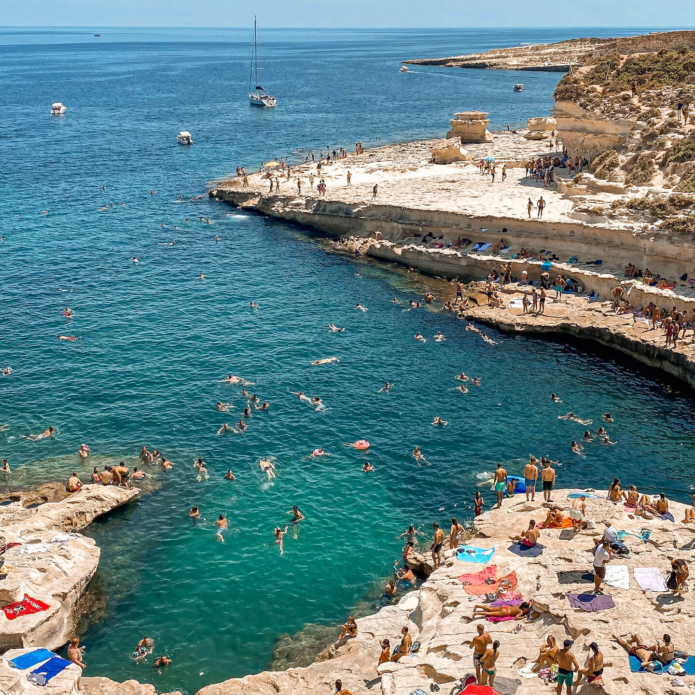

Itinerario Relax (6 Giorni)
Questo itinerario è dedicato a chi cerca pace e tranquillità, con giornate lente tra spiagge serene, paesaggi mozzafiato e momenti di puro riposo. Qui sotto trovi tutti i dettagli del tuo viaggio!

Giorno 1: Domenica 8 Settembre - Arrivo e Tramonto a Sliema
- Sera: Arrivo all'aeroporto di Malta alle 19:45. Dopo il trasferimento e il check-in in appartamento a Sliema (prevedendo di arrivare intorno alle 22:00/23:00), dedica la serata a rilassarti e a familiarizzare con la zona. Puoi fare una breve passeggiata lungo la Promenade di Sliema per goderti l'atmosfera serale e ammirare le luci sulla baia. Cena in uno dei ristoranti con vista mare o in un locale caratteristico nelle vie interne.
Giorno 2: Lunedì 9 Settembre - Spiagge del Nord: Golden Bay e Ghajn Tuffieha
- Giornata intera: Dedica l'intera giornata alle ampie spiagge di sabbia dorata del nord. Prendi un autobus da Sliema per raggiungere Golden Bay, una delle spiagge più popolari e ben attrezzate di Malta. Trascorri la mattinata prendendo il sole e nuotando. Nel pomeriggio, fai una breve passeggiata (o scendi la scalinata) per esplorare la più tranquilla e scenografica Ghajn Tuffieha Bay, ideale per il relax e un bagno.
- Consiglio extra: Resta a Ghajn Tuffieha per ammirare un tramonto spettacolare prima di rientrare a Sliema. Ci sono anche dei chioschi sulla spiaggia per un pranzo leggero.
- Sera: Rientro a Sliema e cena.


Giorno 3: Martedì 10 Settembre - Gozo e la Blue Lagoon (Comino)
- Giornata intera: Questa è la giornata clou per gli amanti del mare. Raggiungi Cirkewwa (punta nord di Malta) in autobus e prendi il traghetto per Gozo. A Gozo, dirigiti subito verso Mgarr Harbour e prendi una barca per Comino, con destinazione la celebre Blue Lagoon. Trascorri gran parte della giornata qui, nuotando, facendo snorkeling nelle sue acque cristalline e godendoti il sole. Per evitare la folla, cerca di arrivare il prima possibile al mattino. Nel tardo pomeriggio, rientra a Gozo e fai una breve visita alla Cittadella di Victoria per i panorami mozzafiato.
- Consiglio extra: Porta con te un pranzo al sacco e molta acqua per la giornata alla Blue Lagoon, o acquista da uno dei chioschi sull'isola.
- Sera: Rientro a Sliema dopo una giornata intensa ma gratificante. Cena.
Giorno 4: Mercoledì 11 Settembre - Marsaxlokk e St. Peter's Pool
- Mattina: Prendi un autobus per Marsaxlokk, un affascinante villaggio di pescatori noto per le sue colorate barche "luzzu" e il vivace mercato del pesce (se visiti di domenica, l'atmosfera è ancora più intensa, ma è comunque piacevole in settimana). Passeggia lungo il porto e goditi l'autenticità del luogo.
- Pomeriggio: Dopo aver pranzato con del pesce fresco in uno dei ristoranti del porto di Marsaxlokk, prendi un taxi o un breve autobus per St. Peter's Pool. Qui, dedica il pomeriggio a nuotare, fare tuffi e rilassarti in questa spettacolare piscina naturale scavata nella roccia, un vero gioiello di Malta.
- Sera: Rientro a Sliema e cena.

Giorno 5: Giovedì 12 Settembre - Valletta e le sue meraviglie storiche (mezza giornata culturale)
- Mattina: Prendi il traghetto da Sliema a Valletta. Concentrati sui "must-see" della capitale: la Concattedrale di San Giovanni, con le sue opere d'arte, e i Giardini di Barrakka Superiore per i panorami sul Grand Harbour. Fai una passeggiata per Republic Street e Merchant Street per ammirare l'architettura barocca.
- Pomeriggio: Pranza a Valletta. Puoi dedicare il resto del pomeriggio a un po' di shopping o a visitare un museo di tuo interesse, come il Palazzo del Gran Maestro. In alternativa, puoi scegliere di tornare a Sliema per un pomeriggio di relax in una delle sue baie rocciose.
- Sera: Cena a Valletta o a Sliema.
Giorno 6: Venerdì 13 Settembre - Mdina e Relax a Balluta Bay o St. Julian's
- Mattina: Prendi un autobus per Mdina, la "Città Silenziosa". Goditi la tranquillità e l'atmosfera fuori dal tempo passeggiando tra le sue strade medievali. Visita la Cattedrale e ammira le viste panoramiche dai bastioni. Puoi anche fare un giro nella vicina Rabat, esplorando le sue catacombe.
- Pomeriggio: Rientro a Sliema. Dedica il pomeriggio al relax. Puoi scegliere di rilassarti a Balluta Bay, una graziosa baia con una piccola spiaggia e diverse caffetterie, oppure esplorare le piscine naturali rocciose intorno a Sliema. In alternativa, dirigiti verso St. Julian's, la vicina località con Spinola Bay e la vivace Paceville.
- Sera: Ultima cena speciale. Puoi optare per un ristorante di pesce a Spinola Bay a St. Julian's o scegliere uno dei ristoranti gourmet a Sliema.

Giorno 7: Sabato 14 Settembre - Mattinata Libera e Partenza
- Mattina: Tempo libero per gli ultimi acquisti di souvenir a Sliema, una passeggiata rilassante sul lungomare, o un caffè finale in uno dei tanti locali con vista mare. Goditi un'ultima colazione maltese.
- Pomeriggio: Trasferimento all'aeroporto per il volo di rientro previsto per le 19:50. Considera di partire dall'alloggio almeno 3 ore prima del volo per avere tempo sufficiente per il check-in e i controlli di sicurezza.